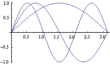
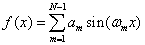

[First three basis functions of a Fourier sine series.]
A Fourier sine series uses only sine functions in the interval [0, 2π] whereas the standard Fourier series uses both sines and cosines with half as many coefficients of each. As is the case for the sine-cosine series, a sine series is a sum of harmonic frequencies {ωm= mω0 } where m in an integer and ω0 = πf0 is the fundamental frequency.

The sine series is often used to solve differential equations that have the value zero at the boundaries and does a poor job fitting functions that do not satisfy this condition. (For example, try f(x)=x.) Note also that the period of the sine series is 4π (not 2π). The shaded portions of the graph shows the extrapolation if the series is evaluated beyond the [0, 2π] interval.
See the EJS Fourier sine-cosine series mdel and the EJS FFT model for additional Fourier analysis simulations.
The Fourier sine series simulation was created by Wolfgang Christian using the Easy Java Simulations (EJS) modeling tool. You can examine and modify the mathematical model for this simulation if you have Ejs installed by right-clicking within the plot and selecting "Open Ejs Model" from the pop-up menu. Information about Ejs is available at: <http://www.um.es/fem/Ejs/> and in the OSP ComPADRE collection <http://www.compadre.org/OSP/>.